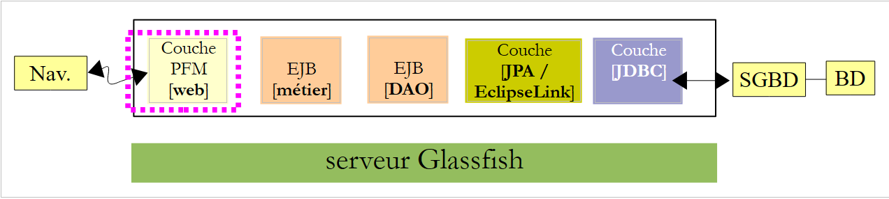
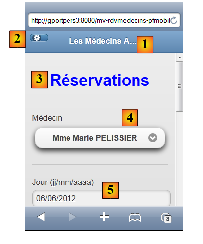
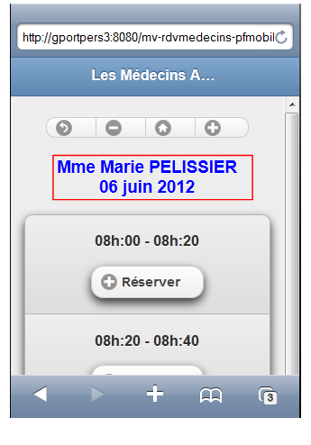
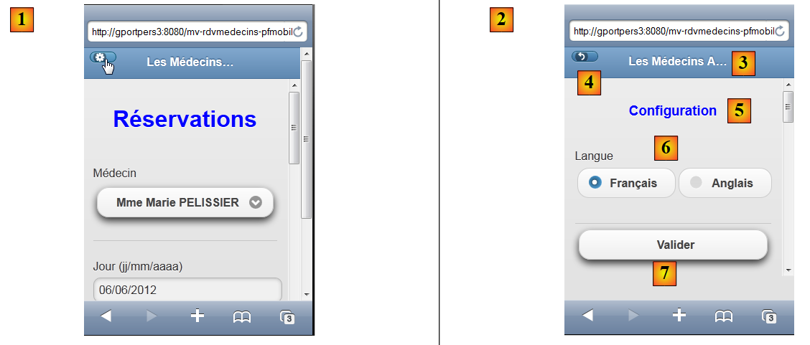

9. تطبيق نموذجي 05: rdvmedecins-pfm-ejb
دعونا نستعرض بنية تطبيق JSF/EJB النموذجي 01 الذي تم تطويره لخادم GlassFish:
 |
لن نغير أي شيء في هذه البنية باستثناء طبقة الويب، التي سيتم تنفيذها هنا باستخدام JSF و PrimeFaces و PrimeFaces Mobile. وسيكون المتصفح المستهدف هو متصفح الجوال.
 |
لقد قمنا بتطوير تطبيقين باستخدام GlassFish:
- استخدم التطبيق 01 JSF/EJB وكان له واجهة بسيطة إلى حد ما،
- التطبيق 03 استخدم PF/EJB وكان له واجهة غنية.
نظرًا للعدد المحدود من المكونات المتاحة في PrimeFaces Mobile، سنعود إلى الواجهة الأساسية للتطبيق 01. بالإضافة إلى ذلك، يجب أن تكون طرق العرض قادرة على التكيف مع حجم الشاشة الصغير للأجهزة المحمولة.
9.1. طرق العرض
لإعطائك فكرة، إليك بعض لقطات الشاشة للتطبيق وهو يعمل في محاكي iPhone 4:
 |
- في [1]، الصفحة الرئيسية. لاحظ أنه كان علينا هذه المرة تحديد اسم الجهاز (يمكنك أيضًا إدخال عنوان IP الخاص به)، لأن استخدام جهاز localhost أدى إلى عدم عرض أي شيء،
- في [2]، القائمة المنسدلة للأطباء،
- في [3]، التاريخ المطلوب للموعد،
- في [4]، زر طلب جدول اليوم،
- في [5]، تعرض طريقة العرض الجديدة الفترات الزمنية المتاحة للطبيب،
- في [6]، سلسلة من الأزرار للتنقل في التقويم،
- في [7]، رسالة تذكرك بالطبيب واليوم،
- في [8]، فترة زمنية للحجز. هيا بنا،
 |
- في [9]، عرض اختيارات العميل،
- في [10]، رسالة تذكّر المستخدم بالطبيب واليوم والفترة الزمنية للموعد،
- في [11]، القائمة المنسدلة للعميل،
- في [12]، زر التأكيد،
- في [13]، يؤدي النقر على الزر إلى إعادتنا إلى التقويم،
- في [14]، أصبحت الفترة الزمنية المشغولة محجوزة الآن. سنقوم الآن بحذف الحجز،
 |
- في [15]، نبقى في نفس الشاشة،
- ولكن في [16]، تم حذف الموعد،
في الصفحة الرئيسية، يمكنك تغيير اللغة [17]، [18]، [19]:
 |
وأخيرًا، قمنا بتضمين عرض للخطأ:
 |
9.2. مشروع NetBeans
مشروع NetBeans هو كما يلي:
 |
- [mv-rdvmedecins-ejb-dao-jpa]: مشروع EJB لطبقات [DAO] و[JPA] في المثال 01،
- [mv-rdvmedecins-ejb-metier]: مشروع EJB للطبقة [التطبيقية] في المثال 01،
- [mv-rdvmedecins-pfmobile]: مشروع طبقة [الويب] / PrimeFaces Mobile – جديد،
- [mv-rdvmedecins-pfmobile-app-ear]: مشروع مؤسسي لنشر التطبيق على خادم GlassFish – جديد.
9.3. مشروع المؤسسة
يُستخدم مشروع المؤسسة حصريًا لنشر الوحدات الثلاث [mv-rdvmedecins-ejb-dao-jpa]، [mv-rdvmedecins-ejb-metier]، [mv-rdvmedecins-pfmobile] على خادم GlassFish. مشروع NetBeans هو كما يلي:
 |
يوجد المشروع حصريًا لهذه التبعيات الثلاث [1] المحددة في ملف [pom.xml] على النحو التالي:
<?xml version="1.0" encoding="UTF-8"?>
<project xmlns="http://maven.apache.org/POM/4.0.0" xmlns:xsi="http://www.w3.org/2001/XMLSchema-instance" xsi:schemaLocation="http://maven.apache.org/POM/4.0.0 http://maven.apache.org/xsd/maven-4.0.0.xsd">
<modelVersion>4.0.0</modelVersion>
...
<groupId>istia.st</groupId>
<artifactId>mv-rdvmedecins-pfmobile-app-ear</artifactId>
<version>1.0-SNAPSHOT</version>
<packaging>ear</packaging>
<name>mv-rdvmedecins-pfmobile-app-ear</name>
...
<dependencies>
<dependency>
<groupId>${project.groupId}</groupId>
<artifactId>mv-rdvmedecins-ejb-dao-jpa</artifactId>
<version>${project.version}</version>
<type>ejb</type>
</dependency>
<dependency>
<groupId>${project.groupId}</groupId>
<artifactId>mv-rdvmedecins-ejb-metier</artifactId>
<version>${project.version}</version>
<type>ejb</type>
</dependency>
<dependency>
<groupId>${project.groupId}</groupId>
<artifactId>mv-rdvmedecins-pfmobile</artifactId>
<version>${project.version}</version>
<type>war</type>
</dependency>
</dependencies>
</project>
- الأسطر 6–9: عنصر Maven الخاص بمشروع المؤسسة،
- الأسطر 14–33: التبعيات الثلاثة للمشروع. لاحظ أنواعها (الأسطر 19 و25 و31).
لتشغيل تطبيق الويب، يجب عليك تشغيل مشروع المؤسسة هذا.
9.4. مشروع الويب PrimeFaces Mobile
مشروع الويب PrimeFaces Mobile هو كما يلي:
 |
- في [1]، صفحات المشروع. صفحة [index.xhtml] هي الصفحة الوحيدة في المشروع. وهي تحتوي على خمس طرق عرض: [vue1.xhtml]، [vue2.xhtml]، [vue3.xhtml]، [vueErreurs.xhtml]، و[config.xhtml]،
- في [2]، حبوب Java. حبة [Application] لها نطاق التطبيق، وحبة [Form] لها نطاق الجلسة. تغلف فئة [Error] خطأً،
- في [3]، ملفات الرسائل للتدويل،
- في [4]، التبعيات. يعتمد مشروع الويب على مشروع EJB لطبقة [DAO]، ومشروع EJB لطبقة [business]، و PrimeFaces Mobile لطبقة [web].
9.5. تكوين المشروع
تتشابه تهيئة المشروع مع تهيئة مشاريع PrimeFaces أو JSF التي درسناها سابقًا. وسنقوم بإدراج ملفات التهيئة دون إعادة شرحها.
 |  |
[web.xml]: يقوم بتكوين تطبيق الويب.
<?xml version="1.0" encoding="UTF-8"?>
<web-app version="3.0" xmlns="http://java.sun.com/xml/ns/javaee" xmlns:xsi="http://www.w3.org/2001/XMLSchema-instance" xsi:schemaLocation="http://java.sun.com/xml/ns/javaee http://java.sun.com/xml/ns/javaee/web-app_3_0.xsd">
<context-param>
<param-name>javax.faces.PROJECT_STAGE</param-name>
<param-value>Development</param-value>
</context-param>
<context-param>
<param-name>javax.faces.FACELETS_SKIP_COMMENTS</param-name>
<param-value>true</param-value>
</context-param>
<servlet>
<servlet-name>Faces Servlet</servlet-name>
<servlet-class>javax.faces.webapp.FacesServlet</servlet-class>
<load-on-startup>1</load-on-startup>
</servlet>
<servlet-mapping>
<servlet-name>Faces Servlet</servlet-name>
<url-pattern>/faces/*</url-pattern>
</servlet-mapping>
<session-config>
<session-timeout>
30
</session-timeout>
</session-config>
<welcome-file-list>
<welcome-file>faces/index.xhtml</welcome-file>
</welcome-file-list>
<error-page>
<error-code>500</error-code>
<location>/faces/exception.xhtml</location>
</error-page>
<error-page>
<exception-type>Exception</exception-type>
<location>/faces/exception.xhtml</location>
</error-page>
</web-app>
يرجى ملاحظة أن صفحة [index.xhtml] في السطر 26 هي الصفحة الرئيسية للتطبيق.
[faces-config.xml]: تكوين تطبيق JSF
<?xml version='1.0' encoding='UTF-8'?>
<!-- =========== FULL CONFIGURATION FILE ================================== -->
<faces-config version="2.0"
xmlns="http://java.sun.com/xml/ns/javaee"
xmlns:xsi="http://www.w3.org/2001/XMLSchema-instance"
xsi:schemaLocation="http://java.sun.com/xml/ns/javaee http://java.sun.com/xml/ns/javaee/web-facesconfig_2_0.xsd">
<application>
<resource-bundle>
<base-name>
messages
</base-name>
<var>msg</var>
</resource-bundle>
<message-bundle>messages</message-bundle>
<default-render-kit-id>PRIMEFACES_MOBILE</default-render-kit-id>
</application>
</faces-config>
[beans.xml]: فارغ ولكنه مطلوب للتعليق التوضيحي @Named
<?xml version="1.0" encoding="UTF-8"?>
<beans xmlns="http://java.sun.com/xml/ns/javaee"
xmlns:xsi="http://www.w3.org/2001/XMLSchema-instance"
xsi:schemaLocation="http://java.sun.com/xml/ns/javaee http://java.sun.com/xml/ns/javaee/beans_1_0.xsd">
</beans>
[messages_fr.properties]: ملف الرسائل باللغة الفرنسية
# page
page.titre=Les M\u00e9decins Associ\u00e9s
format.date=dd/MM/yyyy
format.date_detail=dd/MM/yyyy
# vue1
vue1.header=Les M\u00e9decins Associ\u00e9s - R\u00e9servations
# formulaire 1
form1.titre=R\u00e9servations
form1.medecin=M\u00e9decin
form1.jour=Jour (jj/mm/aaaa)
form1.date.requise=La date est n\u00e9cessaire
form1.date.invalide=La date est invalide
form1.date.invalide_detail=La date est invalide
form1.agenda=Agenda
form1.options=Options
# formulaire 2
form2.titre={0} {1} {2}<br/>{3}
form2.titre_detail={0} {1} {2}<br/>{3}
form2.retour=Retour
form2.supprimer=Supprimer
form2.reserver=R\u00e9server
form2.precedent=Jour pr\u00e9c\u00e9dent
form2.suivant=Jour suivant
form2.today=Aujourd'today
# formulaire 3
form3.client=Client
form3.valider=Valider
form3.titre={0} {1} {2}<br/>{3}<br/>{4,number,#00}h:{5,number,#00}-{6,number,#00}h:{7,number,#00}
form3.titre_detail={0} {1} {2}<br/>{3}<br/>{4,number,#00}h:{5,number,#00}-{6,number,#00}h:{7,number,#00}
form3.retour=Retour
# erreur
erreur.titre=Une erreur s'is produced.
# config
config.retour=Retour
config.titre=Configuration
config.langue=Langue
config.langue.francais=Fran\u00e7ais
config.langue.anglais=Anglais
config.valider=Valider
#exception
exception.titre=Application indisponible. Veuillez recommencer ult\u00e9rieurement.
[messages_en.properties]: ملف الرسائل باللغة الإنجليزية
# page
page.titre=The Associated Doctors
format.date=dd/MM/yyyy
format.date_detail=dd/MM/yyyy
# vue1
vue1.header=The Associated Doctors - Reservations
# formulaire 1
form1.titre=Reservations
form1.medecin=Doctor
form1.jour=day (dd/mm/yyyy)
form1.date.requise=The date is necessary
form1.date.invalide=Invalid date
form1.date.invalide_detail=invalid date
form1.agenda=Diary
form1.options=Options
# formulaire 2
form2.titre={0} {1} {2}<br/>{3}
form2.titre_detail={0} {1} {2}<br/>{3}
form2.retour=Back
form2.supprimer=Delete
form2.reserver=Reserve
form2.precedent=Previous Day
form2.suivant=Next Day
form2.today=Today
# formulaire 3
form3.client=Patient
form3.valider=Validate
form3.titre={0} {1} {2}<br/>{3}<br/>{4,number,#00}h:{5,number,#00}-{6,number,#00}h:{7,number,#00}
form3.titre_detail={0} {1} {2}<br/>{3}<br/>{4,number,#00}h:{5,number,#00}-{6,number,#00}h:{7,number,#00}
form3.retour=Back
# erreur
erreur.titre=Some error happened
# config
config.retour=Back
config.titre=Configuration
config.langue=Language
config.langue.francais=French
config.langue.anglais=English
config.valider=Validate
#exception
exception.titre=Application not available. Please try again later.
9.6. الصفحة [index.xhtml]
 |
يعرض المشروع دائمًا نفس الصفحة، وهي صفحة [index.xhtml] التالية:
<f:view xmlns="http://www.w3.org/1999/xhtml"
xmlns:f="http://java.sun.com/jsf/core"
xmlns:h="http://java.sun.com/jsf/html"
xmlns:ui="http://java.sun.com/jsf/facelets"
xmlns:p="http://primefaces.org/ui"
xmlns:pm="http://primefaces.org/mobile"
contentType="text/html"
locale="#{form.locale}">
<pm:page title="#{msg['page.titre']}">
<pm:view id="vue1">
<ui:fragment rendered="#{form.form1Rendered}">
<ui:include src="vue1.xhtml"/>
</ui:fragment>
<ui:fragment rendered="#{form.erreurInit}">
<ui:include src="vueErreurs.xhtml"/>
</ui:fragment>
</pm:view>
<pm:view id="vue2">
<ui:fragment rendered="#{form.form2Rendered}">
<ui:include src="vue2.xhtml"/>
</ui:fragment>
</pm:view>
<pm:view id="vue3">
<ui:fragment rendered="#{form.form3Rendered}">
<ui:include src="vue3.xhtml"/>
</ui:fragment>
</pm:view>
<pm:view id="vueErreurs">
<ui:fragment rendered="#{form.erreurRendered}">
<ui:include src="vueErreurs.xhtml"/>
</ui:fragment>
</pm:view>
<pm:view id="config">
<ui:include src="config.xhtml"/>
</pm:view>
</pm:page>
</f:view>
- السطر 8: الصفحة مدعمة باللغات (سمة locale)،
- السطر 10: تحتوي الصفحة على خمس طرق عرض: view1 في السطر 11، و view2 في السطر 19، و view3 في السطر 24، و viewErrors في السطر 29، و config في السطر 34. في أي وقت، لا تظهر سوى طريقة عرض واحدة من هذه الطرق. عند بدء تشغيل التطبيق، يتم عرض view1. هنا، واجهنا المشكلة التالية: إذا تم تهيئة التطبيق بنجاح، يجب عرض [view1.xhtml]؛ وإلا، يجب عرض [errorView.xhtml]. لقد حللنا المشكلة من خلال التأكد من أن محتوى عرض vue1 يدار بواسطة النموذج، الذي يحدد قيم القيم المنطقية [Form].form1rendered (السطر 12) و [Form].erreurInit (السطر 15) لتحديد محتوى vue1 (السطر 11)،
في المحاكي، يتم عرض العرض [vue1.xhtml] كـ [1]، ويتم عرض العرض [vue2.xhtml] كـ [2]، ويتم عرض العرض [vue3.xhtml] كـ [3]:
 |
يتم عرض العرض [vueErreurs.xhtml] على أنه [4]، ويتم عرض العرض [config.xhtml] على أنه [5]:
 |
9.7. فاصوليا المشروع
 |
تمت بالفعل مقدمة الفئة الموجودة في حزمة [utils]: فئة [Messages] هي فئة تسهل تدويل رسائل التطبيق. وقد تمت مناقشتها في القسم 2.8.5.7.
9.7.1. حبة التطبيق
حبة [Application.java] هي حبة على نطاق التطبيق. تذكر أن هذا النوع من الحبات يُستخدم لتخزين البيانات للقراءة فقط المتاحة لجميع مستخدمي التطبيق. هذه الحبة هي كما يلي:
package beans;
import javax.ejb.EJB;
import javax.enterprise.context.ApplicationScoped;
import javax.inject.Named;
import rdvmedecins.metier.service.IMetierLocal;
@Named(value = "application")
@ApplicationScoped
public class Application {
// business layer
@EJB
private IMetierLocal metier;
public Application() {
}
// getters
public IMetierLocal getMetier() {
return metier;
}
}
- السطر 8: نسمي الفول "application"،
- السطر 9: له نطاق تطبيق،
- السطران 13-14: سيتم إدخال مرجع إلى الواجهة المحلية لطبقة [الأعمال] فيه بواسطة حاوية EJB الخاصة بخادم التطبيق. دعونا نراجع بنية التطبيق:
 |
سيتم تشغيل تطبيق PFM و EJB [الأعمال] في نفس JVM (آلة Java الافتراضية). لذلك، ستستخدم طبقة [PFM] الواجهة المحلية لـ EJB. هذا كل شيء. لا يحتوي bean [التطبيق] على أي شيء آخر. للوصول إلى طبقة [الأعمال]، ستقوم beans الأخرى باستردادها من هذا bean.
9.7.2. حبة [Error]
فئة [Error] هي كما يلي:
package beans;
public class Erreur {
public Erreur() {
}
// field
private String classe;
private String message;
// manufacturer
public Erreur(String classe, String message){
this.setClasse(classe);
this.message=message;
}
// getters and setters
...
}
- السطر 9: اسم فئة الاستثناء في حالة حدوث استثناء،
- السطر 10: رسالة خطأ.
9.7.3. حبة [Form]
فيما يلي كودها:
package beans;
...
@Named(value = "form")
@SessionScoped
public class Form implements Serializable {
public Form() {
}
// bean Application
@Inject
private Application application;
private IMetierLocal metier;
// session cache
private List<Medecin> medecins;
private List<Client> clients;
private Map<Long, Medecin> hMedecins = new HashMap<Long, Medecin>();
private Map<Long, Client> hClients = new HashMap<Long, Client>();
// model
private Long idMedecin;
private Date jour = new Date();
private String strJour;
private Boolean form1Rendered;
private Boolean form2Rendered;
private Boolean form3Rendered;
private Boolean erreurRendered;
private String form2Titre;
private String form3Titre;
private AgendaMedecinJour agendaMedecinJour;
private Long idCreneauChoisi;
private Medecin medecin;
private Long idClient;
private CreneauMedecinJour creneauChoisi;
private List<Erreur> erreurs;
private Boolean erreurInit = false;
private String action;
private String locale = "fr";
private String msgErreurDate = "";
private SimpleDateFormat dateFormatter;
private Boolean erreurDate;
@PostConstruct
private void init() {
System.out.println("init");
// initially no error
erreurInit = false;
// date formatting
dateFormatter = new SimpleDateFormat(Messages.getMessage(null, "format.date", null).getSummary());
dateFormatter.setLenient(false);
// the current day
strJour = dateFormatter.format(jour);
// recover the business layer
metier = application.getMetier();
// caching doctors and customers
try {
medecins = metier.getAllMedecins();
clients = metier.getAllClients();
} catch (Throwable th) {
// we note the error
erreurInit = true;
prepareVueErreur(th);
return;
}
// list checking
if (medecins.size() == 0) {
// we note the error
erreurInit = true;
erreurs = new ArrayList<Erreur>();
erreurs.add(new Erreur("", "La liste des médecins est vide"));
}
if (clients.size() == 0) {
// we note the error
erreurInit = true;
erreurs = new ArrayList<Erreur>();
erreurs.add(new Erreur("", "La liste des clients est vide"));
}
// mistake?
if (erreurInit) {
// the error view is displayed
setForms(false, false, false, true);
return;
}
// dictionaries
for (Medecin m : medecins) {
hMedecins.put(m.getId(), m);
}
for (Client c : clients) {
hClients.put(c.getId(), c);
}
// view 1
setForms(true, false, false, false);
}
// view display
private void setForms(Boolean form1Rendered, Boolean form2Rendered, Boolean form3Rendered, Boolean erreurRendered) {
this.form1Rendered = form1Rendered;
this.form2Rendered = form2Rendered;
this.form3Rendered = form3Rendered;
this.erreurRendered = erreurRendered;
}
// preparation vueErreur
private void prepareVueErreur(Throwable th) {
// create an error list
erreurs = new ArrayList<Erreur>();
erreurs.add(new Erreur(th.getClass().getName(), th.getMessage()));
while (th.getCause() != null) {
th = th.getCause();
erreurs.add(new Erreur(th.getClass().getName(), th.getMessage()));
}
// the error view is displayed
setForms(false, false, false, true);
}
// getters and setters
..
}
- السطور 5-7: فئة [Form] هي حبة (bean) باسم "form" ذات نطاق جلسة. لاحظ أن الفئة يجب أن تكون قابلة للتسلسل،
- السطور 12–13: يحتوي bean النموذج على مرجع إلى bean التطبيق. سيتم حقن هذا المرجع بواسطة حاوية servlet التي يعمل فيها التطبيق (وجود تعليق @Inject).
- الأسطر 24-27: تتحكم في عرض طرق العرض vue1 (السطر 24)، vue2 (السطر 25)، vue3 (السطر 26)، و vueErrors (السطر 27)،
- السطور 43-44: يتم تنفيذ طريقة init فور إنشاء مثيل للفئة (وجود تعليق @PostConstruct)،
- السطور 49-50: تتعامل مع تنسيق التاريخ. لا يوفر PrimeFaces Mobile تقويمًا. علاوة على ذلك، لا يمكن استخدام أدوات التحقق من صحة JSF في صفحة PFM. لذلك، سنحتاج إلى التعامل يدويًا مع إدخال تاريخ التقويم،
- السطر 49: يحدد تنسيق التاريخ. يتم أخذ هذا التنسيق من ملفات التدويل:
format.date=dd/MM/yyyy
format.date_detail=dd/MM/yyyy
- السطر 50: نحدد أنه يجب ألا نكون "متساهلين" فيما يتعلق بالتواريخ. إذا لم نفعل ذلك، فإن إدخالًا مثل 12/32/2011 — وهو إدخال غير صحيح — يُعتبر التاريخ الصحيح 01/01/2012،
- السطر 54: نسترد مرجعًا إلى طبقة [business] من حبة [Application]،
- السطران 57-58: نطلب قائمة الأطباء والعملاء من طبقة [business]،
- الأسطر 66–91: إذا سارت الأمور على ما يرام، يتم إنشاء قواميس الأطباء والعملاء. يتم فهرستها حسب أرقامها. بعد ذلك، سيتم عرض طريقة العرض [vue1.xhtml] (السطر 93)،
- السطر 59: في حالة حدوث خطأ، يتم إنشاء قالب الصفحة [errorView.xhtml]. هذا القالب هو قائمة الأخطاء من السطر 35،
- الأسطر 105–115: تقوم طريقة [prepareVueErreur] بإنشاء قائمة الأخطاء المراد عرضها. ثم تعرض الصفحة [index.xhtml] عرض [vueErreurs.xhtml] (السطر 114).
صفحة [error.xhtml] هي كما يلي:
<?xml version='1.0' encoding='UTF-8' ?>
<!DOCTYPE html PUBLIC "-//W3C//DTD XHTML 1.0 Transitional//EN" "http://www.w3.org/TR/xhtml1/DTD/xhtml1-transitional.dtd">
<html xmlns="http://www.w3.org/1999/xhtml"
xmlns:h="http://java.sun.com/jsf/html"
xmlns:p="http://primefaces.org/ui"
xmlns:f="http://java.sun.com/jsf/core"
xmlns:pm="http://primefaces.org/mobile"
xmlns:ui="http://java.sun.com/jsf/facelets">
<!-- Errors view -->
<pm:header title="#{msg['page.titre']}" swatch="b">
<f:facet name="left">
<p:button icon="home" value=" " href="#vue1?reverse=true" />
</f:facet>
</pm:header>
<pm:content>
<div align="center">
<h1><h:outputText value="#{msg['erreur.titre']}" style="color: blue"/></h1>
</div>
<p:dataList value="#{form.erreurs}" var="erreur">
<b>#{erreur.classe}</b> : <i>#{erreur.message}</i>
</p:dataList>
</pm:content>
</html>
يستخدم هذا الكود علامة <p:dataList> (الأسطر 21–23) لعرض قائمة الأخطاء. ويتيح لك الزر الموجود في السطر 13 العودة إلى طريقة العرض vue1.
 |
- يتم إنشاء الزر [1] بواسطة السطر 13. تحدد سمة icon رمز الزر. يعيد الزر إلى عرض vue1 (سمة href)،
- يتم إنشاء العنوان [2] بواسطة الأسطر 11–15،
- يتم إنشاء العنوان [3] بواسطة السطر 18،
- يتم إنشاء النص [4] بواسطة القالب #{error.class} في السطر 22،
- يتم إنشاء النص [5] بواسطة القالب #{erreur.message} في السطر 22.
سنقوم الآن بتحديد المراحل المختلفة لدورة حياة التطبيق. بالنسبة لكل إجراء يقوم به المستخدم، سنقوم بفحص العروض ذات الصلة ومعالجات الأحداث التي تحدث داخلها.
9.8. عرض الصفحة الرئيسية
إذا سارت الأمور على ما يرام، فإن العرض الأول الذي يظهر هو [vue1.xhtml]. وينتج عن ذلك العرض التالي:
 |
فيما يلي كود عرض [vue1.xhtml]:
<?xml version='1.0' encoding='UTF-8' ?>
<!DOCTYPE html PUBLIC "-//W3C//DTD XHTML 1.0 Transitional//EN" "http://www.w3.org/TR/xhtml1/DTD/xhtml1-transitional.dtd">
<html xmlns="http://www.w3.org/1999/xhtml"
xmlns:h="http://java.sun.com/jsf/html"
xmlns:p="http://primefaces.org/ui"
xmlns:f="http://java.sun.com/jsf/core"
xmlns:pm="http://primefaces.org/mobile"
xmlns:ui="http://java.sun.com/jsf/facelets">
<!-- View 1 -->
<pm:header title="#{msg['page.titre']}" swatch="b">
<f:facet name="left">
<p:button icon="gear" value=" " href="#config" />
</f:facet>
</pm:header>
<pm:content>
<h:form id="form1">
<div align="center">
<h1><h:outputText value="#{msg['form1.titre']}" style="color: blue"/></h1>
</div>
<pm:field>
<h:outputLabel value="#{msg['form1.medecin']}" for="choixMedecin"/>
<h:selectOneMenu id="choixMedecin" value="#{form.idMedecin}">
<f:selectItems value="#{form.medecins}" var="medecin" itemLabel="#{medecin.titre} #{medecin.prenom} #{medecin.nom}" itemValue="#{medecin.id}"/>
</h:selectOneMenu>
</pm:field>
<pm:field>
<h:outputLabel value="#{msg['form1.jour']}" for="jour"/>
<p:inputText id="jour" value="#{form.strJour}"/>
<ui:fragment rendered="#{form.erreurDate}">
<p:spacer width="50px"/>
<h:outputText id="msgErreurDate" value="#{form.msgErreurDate}" style="color: red"/>
</ui:fragment>
</pm:field>
<p:commandButton value="#{msg['form1.agenda']}" update=":form1, :vue2, :vueErreurs" action="#{form.getAgenda}" />
</h:form>
</pm:content>
</html>
- الأسطر 11–15: إنشاء العنوان [1]،
- السطر 13: إنشاء الزر [2]. يؤدي النقر عليه إلى عرض طريقة عرض التكوين (سمة href)،
- السطر 19: يعرض العنوان [3]،
- الأسطر 21–26: إنشاء القائمة المنسدلة للطبيب [4]،
- الأسطر 27–34: تعرض حقل إدخال التاريخ [5]. يستخدم حقل الإدخال هذا علامة <p:inputText> بدون أداة تحقق. سيتم إجراء التحقق من صحة التاريخ على جانب الخادم. إذا كان التاريخ غير صحيح، فسيقوم الخادم بتعيين رسالة خطأ يتم عرضها بواسطة الأسطر 30–34،
 |
- السطر 35: الزر الذي يرسل النموذج. يقوم بتحديث ثلاث مناطق: form1 (النموذج في vue1)، vue2، و vueErrors. في الواقع، إذا كان التاريخ غير صالح، يجب تحديث form1. إذا كان التاريخ صحيحًا، يجب تحديث vue2. أخيرًا، إذا حدث استثناء (مثل انقطاع اتصال قاعدة البيانات)، يجب عرض vueErreurs. قد تميل إلى استخدام vue1 بدلاً من form1 (تحديث العرض بالكامل). في هذه الحالة، سيتعطل التطبيق.
يتم دعم هذا العرض بالنموذج التالي:
@Named(value = "form")
@SessionScoped
public class Form implements Serializable {
public Form() {
}
// bean Application
@Inject
private Application application;
private IMetierLocal metier;
// session cache
private List<Medecin> medecins;
private List<Client> clients;
// model
private Long idMedecin;
private Date jour = new Date();
private String strJour;
private Boolean form1Rendered;
private Boolean form2Rendered;
private Boolean form3Rendered;
private Boolean erreurRendered;
private String msgErreurDate = "";
private Boolean erreurDate;
// list of doctors
public List<Medecin> getMedecins() {
return medecins;
}
// agenda
public String getAgenda() {
...
}
}
- يقوم الحقل الموجود في السطر 16 بقراءة وكتابة قيمة القائمة الموجودة في السطر 23 من الصفحة. عند عرض الصفحة لأول مرة، يقوم بتعيين القيمة المحددة في مربع القائمة المنسدلة،
- تقوم الطريقة في الأسطر 27-29 بإنشاء العناصر لقائمة الأطباء المنسدلة (الصف 24 من العرض). سيكون لكل خيار تم إنشاؤه عنوان (itemLabel) يتكون من لقب الطبيب واسمه الأخير واسمه الأول، وقيمة (itemValue) تتكون من معرف الطبيب.
- يوفر الحقل في السطر 18 وصولاً للقراءة/الكتابة إلى حقل الإدخال في السطر 29 من الصفحة،
- الأسطر 32-34: تتولى طريقة getAgenda معالجة النقر على زر [Agenda] في السطر 35 من الصفحة. وفيما يلي كودها:
// agenda
public String getAgenda() {
try {
// on vérifie le jour
jour = dateFormatter.parse(strJour);
// pas d'erreur
erreurDate=false;
msgErreurDate = "";
// on crée l'agenda
return getAgenda(jour);
} catch (ParseException ex) {
// msg d'erreur
erreurDate=true;
msgErreurDate = Messages.getMessage(null, "form1.date.invalide", null).getSummary();
// vue1
setForms(true, false, false, false);
return "pm:vue1";
}
}
- تبدأ الطريقة بالتحقق من صحة التاريخ الذي أدخله المستخدم،
- السطر 5: يتم تحليل التاريخ وفقًا لتنسيق التاريخ الذي تم تهيئته بواسطة طريقة init عند إنشاء مثيل النموذج،
- السطر 11: في حالة حدوث استثناء، يتم تعيين خطأ (السطر 13)، ويتم إنشاء رسالة خطأ متعددة اللغات (السطر 14)، ويتم إعداد عرض vue1 (السطر 16)، ويتم عرض عرض vue1 (السطر 17)،
- السطر 10: إذا كان التاريخ صالحًا، يتم تنفيذ الطريقة التالية:
// agenda
public String getAgenda(Date jour) {
// no slots selected yet
creneauChoisi = null;
try {
// we pick up the chosen doctor
medecin = hMedecins.get(idMedecin);
// title form 2
form2Titre = Messages.getMessage(null, "form2.titre", new Object[]{medecin.getTitre(), medecin.getPrenom(), medecin.getNom(), new SimpleDateFormat("dd MMM yyyy").format(jour)}).getSummary();
// the doctor's diary for a given day
agendaMedecinJour = metier.getAgendaMedecinJour(medecin, jour);
// view 2 is displayed
setForms(false, true, false, false);
return "pm:vue2";
} catch (Throwable th) {
System.out.println(th);
// error view
prepareVueErreur(th);
return "pm:vueErreurs";
}
}
هنا نرى كودًا ظهر عدة مرات من قبل. في السطر 9، يتم إنشاء رسالة مُعَلَّمة لـ vue2 view:
form2.titre={0} {1} {2}<br/>{3}
form2.titre_detail={0} {1} {2}<br/>{3}
لاحظ أننا أدرجنا XHTML في الرسالة. سيتم عرضها على النحو التالي:
 |
9.9. عرض جدول مواعيد الطبيب
يتم عرض جدول مواعيد الطبيب من خلال الصفحة [vue2.xhtml]:
 |
فيما يلي كود عرض [vue2.xhtml]:
<?xml version='1.0' encoding='UTF-8' ?>
<!DOCTYPE html PUBLIC "-//W3C//DTD XHTML 1.0 Transitional//EN" "http://www.w3.org/TR/xhtml1/DTD/xhtml1-transitional.dtd">
<html xmlns="http://www.w3.org/1999/xhtml"
xmlns:h="http://java.sun.com/jsf/html"
xmlns:p="http://primefaces.org/ui"
xmlns:f="http://java.sun.com/jsf/core"
xmlns:pm="http://primefaces.org/mobile"
xmlns:ui="http://java.sun.com/jsf/facelets">
<!-- View 2 -->
<pm:header title="#{msg['page.titre']}" swatch="b"/>
<pm:content>
<h:form id="form2">
<div align="center">
<pm:buttonGroup orientation="horizontal">
<p:commandButton inline="true" icon="back" value=" " action="#{form.showVue1}" update=":vue1"/>
<p:commandButton inline="true" icon="minus" value=" " action="#{form.getPreviousAgenda}" update=":form2"/>
<p:commandButton inline="true" icon="home" value=" " action="#{form.getTodayAgenda}" update=":form2"/>
<p:commandButton inline="true" icon="plus" value=" " action="#{form.getNextAgenda}" update=":form2"/>
</pm:buttonGroup>
<h3><h:outputText value="#{form.form2Titre}" style="color: blue" escape="false"/></h3>
</div>
<p:dataList id="creneaux" type="inset" value="#{form.agendaMedecinJour.creneauxMedecinJour}" var="creneauMedecinJour">
<p:column>
<div align="center">
<h2>
<h:outputFormat value="{0,number,#00}h:{1,number,#00} - {2,number,#00}h:{3,number,#00}">
<f:param value="#{creneauMedecinJour.creneau.hdebut}" />
<f:param value="#{creneauMedecinJour.creneau.mdebut}" />
<f:param value="#{creneauMedecinJour.creneau.hfin}" />
<f:param value="#{creneauMedecinJour.creneau.mfin}" />
</h:outputFormat>
<ui:fragment rendered="#{creneauMedecinJour.rv!=null}">
<br/>
<h:outputText value="#{creneauMedecinJour.rv.client.titre} #{creneauMedecinJour.rv.client.prenom} #{creneauMedecinJour.rv.client.nom}" style="color: blue"/>
</ui:fragment>
</h2>
</div>
<div align="center">
<ui:fragment rendered="#{creneauMedecinJour.rv!=null}">
<p:commandButton inline="true" action="#{form.action}" value="#{msg['form2.supprimer']}" icon="minus" update=":form2, :vue3, :vueErreurs">
<f:setPropertyActionListener value="#{creneauMedecinJour.creneau.id}" target="#{form.idCreneauChoisi}"/>
</p:commandButton>
</ui:fragment>
<ui:fragment rendered="#{creneauMedecinJour.rv==null}">
<p:commandButton inline="true" action="#{form.action}" value="#{msg['form2.reserver']}" icon="plus" update=":form2, :vue3, :vueErreurs">
<f:setPropertyActionListener value="#{creneauMedecinJour.creneau.id}" target="#{form.idCreneauChoisi}"/>
</p:commandButton>
</ui:fragment>
</div>
</p:column>
</p:dataList>
</h:form>
</pm:content>
</html>
- السطر 11: ينشئ العنوان [1]،
- الأسطر 15–20: تنشئ مجموعة الأزرار [2]،
- السطر 21: يُنشئ العنوان [3]. لاحظ قيمة السمة escape. فهذه هي التي تسمح بتفسير كود XHTML الذي وضعناه في form2Titre،
- السطر 24: يتم عرض الفترات الزمنية باستخدام dataList،
- الأسطر 28–33: توليد تسمية الفترة الزمنية [4]،
- الأسطر 34-37: تعرض مقتطفًا إذا كان هناك موعد في الفترة الزمنية،
- السطر 36: يعرض اسم العميل الذي حدد الموعد،
- الأسطر 41-45: عرض زر [حذف] إذا كان هناك موعد،
- الأسطر 46-50: عرض زر [حجز] إذا لم تكن هناك مواعيد.
يتم ملء هذه الشاشة بشكل أساسي بالنموذج التالي:
private AgendaMedecinJour agendaMedecinJour;
الذي يملأ dataList في السطر 24. تم إنشاء هذا الحقل بواسطة طريقة getAgenda عند التبديل من view1 إلى view2.
9.10. حذف موعد
يتم حذف الموعد وفقًا للتسلسل التالي:
 |  |
الطريقة المعنية بهذا الإجراء هي كما يلي:
<ui:fragment rendered="#{creneauMedecinJour.rv!=null}">
<p:commandButton inline="true" action="#{form.action}" value="#{msg['form2.supprimer']}" icon="minus" update=":form2, :vueErreurs">
<f:setPropertyActionListener value="#{creneauMedecinJour.creneau.id}" target="#{form.idCreneauChoisi}"/>
</p:commandButton>
</ui:fragment>
- السطر 2: زر [حذف] مرتبط بأسلوب [Form].action (سمة action)،
- السطر 3: سيتم إرسال معرف الفتحة المحددة حاليًا إلى نموذج [Form].idCreneauChoisi،
- السطر 2: سيقوم استدعاء AJAX بتحديث حقول form2 (نموذج view2) وعرض vueErreurs. هناك سيناريوهان محتملان: إذا سارت الأمور على ما يرام، فسيتم إعادة عرض vue2؛ وإلا، فسيتم عرض vueErreurs.
طريقة [action] هي كما يلي:
// action on RV
public String action() {
// search for the time slot in the calendar
int i = 0;
Boolean trouvé = false;
while (!trouvé && i < agendaMedecinJour.getCreneauxMedecinJour().length) {
if (agendaMedecinJour.getCreneauxMedecinJour()[i].getCreneau().getId() == idCreneauChoisi) {
trouvé = true;
} else {
i++;
}
}
// have we found?
if (!trouvé) {
// it's weird - form2 is redisplayed
setForms(false, true, false, false);
return "pm:vue2";
} else {
creneauChoisi = agendaMedecinJour.getCreneauxMedecinJour()[i];
}
// we found
// according to desired action
if (creneauChoisi.getRv() == null) {
return reserver();
} else {
return supprimer();
}
}
// reservation
public String reserver() {
...
}
public String supprimer() {
try {
// deleting an appointment
metier.supprimerRv(creneauChoisi.getRv());
// updating the agenda
agendaMedecinJour = metier.getAgendaMedecinJour(medecin, jour);
// form2 is displayed
setForms(false, true, false, false);
return "pm:vue2";
} catch (Throwable th) {
// error view
prepareVueErreur(th);
return "pm:vueErreurs";
}
}
- الأسطر 3-12: نبحث عن الفترة الزمنية التي تلقينا معرّفها (السطر 7)،
- وإذا لم يتم العثور عليها، وهو أمر غير طبيعي، فإننا نعرض view2 مرة أخرى (الأسطر 16-17)،
- السطر 19: إذا تم العثور عليه، يتم تخزين الكائن [CreneauMedecinJour] المقابل. يتيح لنا هذا الكائن الوصول إلى الموعد المراد حذفه،
- السطر 26: نقوم بحذفه،
- الأسطر 35–48: تعرض طريقة الحذف عرض vue2 إذا نجح الحذف (الأسطر 42–43) أو عرض vueErrors إذا كانت هناك مشكلة (الأسطر 46–47).
9.11. تحديد موعد
يتم تحديد موعد وفقًا للتسلسل التالي:
 |  |
ننتقل من عرض vue2 إلى عرض vue3. فيما يلي الكود المتعلق بهذا الإجراء:
<ui:fragment rendered="#{creneauMedecinJour.rv==null}">
<p:commandButton inline="true" action="#{form.action}" value="#{msg['form2.reserver']}" icon="plus" update=":vue3, :vueErreurs">
<f:setPropertyActionListener value="#{creneauMedecinJour.creneau.id}" target="#{form.idCreneauChoisi}"/>
</p:commandButton>
</ui:fragment>
- السطر 2: يرتبط زر [Book] بأسلوب [Form].action (سمة action)، لذا فهو مماثل لزر [Delete]. يقوم استدعاء AJAX بتحديث عرضي vue3 و vueErrors اعتمادًا على وجود أخطاء أثناء معالجة الاستدعاء أم لا.
- السطر 3: كما هو الحال مع زر [Delete]، يتم تمرير معرف الفترة الزمنية إلى النموذج.
النموذج الذي يتعامل مع هذا الإجراء هو كما يلي:
// action on RV
public String action() {
...
// according to desired action
if (creneauChoisi.getRv() == null) {
return reserver();
} else {
return supprimer();
}
}
// reservation
public String reserver() {
try {
// title form 3
form3Titre = Messages.getMessage(null, "form3.titre", new Object[]{medecin.getTitre(), medecin.getPrenom(), medecin.getNom(), new SimpleDateFormat("dd MMM yyyy").format(jour),
creneauChoisi.getCreneau().getHdebut(), creneauChoisi.getCreneau().getMdebut(), creneauChoisi.getCreneau().getHfin(), creneauChoisi.getCreneau().getMfin()}).getSummary();
// form 3 is displayed
setForms(false, false, true, false);
return "pm:vue3";
} catch (Throwable th) {
// error view
prepareVueErreur(th);
return "pm:vueErreurs";
}
}
- الأسطر 2–10: تسترد طريقة الإجراء مرجع creneauChoisi للكائن [CreneauMedecinJour] الذي يتم حجزه، ثم تستدعي طريقة reserver،
- السطر 16: يتم إنشاء رسالة دولية. وهي كما يلي:
form3.titre={0} {1} {2}<br/>{3}<br/>{4,number,#00}h:{5,number,#00}-{6,number,#00}h:{7,number,#00}
form3.titre_detail={0} {1} {2}<br/>{3}<br/>{4,number,#00}h:{5,number,#00}-{6,number,#00}h:{7,number,#00}
سيكون هذا عنوان عرض vue3. كما هو الحال مع عرض vue2، يحتوي هذا العنوان على XML. كما يتضمن معلمات منسقة لعرض الفترات الزمنية،
 |
- السطران 19-20: يتم عرض عرض vue3،
- السطران 23-24: يتم عرض عرض vueErrors في حالة مواجهة مشاكل.
9.12. تأكيد الموعد
يتبع التحقق من صحة الموعد التسلسل التالي:
 |
في [1]، عرض vue3، وفي [2]، عرض vue2 بعد إضافة موعد.
في [1]، عرض vue3، وفي [2]، عرض vue2 بعد إضافة موعد.
<?xml version='1.0' encoding='UTF-8' ?>
<!DOCTYPE html PUBLIC "-//W3C//DTD XHTML 1.0 Transitional//EN" "http://www.w3.org/TR/xhtml1/DTD/xhtml1-transitional.dtd">
<html xmlns="http://www.w3.org/1999/xhtml"
xmlns:h="http://java.sun.com/jsf/html"
xmlns:p="http://primefaces.org/ui"
xmlns:f="http://java.sun.com/jsf/core"
xmlns:pm="http://primefaces.org/mobile"
xmlns:ui="http://java.sun.com/jsf/facelets">
<!-- View 3 -->
<pm:header title="#{msg['page.titre']}" swatch="b"/>
<pm:content>
<h:form id="form3">
<p:commandButton inline="true" value=" " icon="back" action="#{form.showVue2}" update=":vue2"/>
<div align="center">
<h3><h:outputText value="#{form.form3Titre}" style="color: blue" escape="false"/></h3>
</div>
<pm:field>
<h:outputLabel value="#{msg['form3.client']}" for="choixClient"/>
<h:selectOneMenu id="choixClient" value="#{form.idClient}">
<f:selectItems value="#{form.clients}" var="client" itemLabel="#{client.titre} #{client.prenom} #{client.nom}" itemValue="#{client.id}"/>
</h:selectOneMenu>
</pm:field>
<div align="center">
<p:commandButton inline="true" value="#{msg['form3.valider']}" action="#{form.validerRv}" update=":vue2, :vueErreurs" icon="check"/>
</div>
</h:form>
</pm:content>
</html>
- السطر 16: يُنشئ عنوان العرض [3]. لاحظ قيمة سمة escape، التي تسمح بتفسير أحرف XHTML في العنوان،
- الأسطر 18–23: تولد قائمة منسدلة للعميل [4]،
- السطر 25: يُنشئ زر [التحقق من الصحة] [5]. ترتبط طريقة [Form].validateRv بهذا الزر:
// rv validation
public String validerRv() {
try {
// retrieve an instance of the chosen slot
Creneau creneau = metier.getCreneauById(idCreneauChoisi);
// we add the Rv
metier.ajouterRv(jour, creneau, hClients.get(idClient));
// updating the agenda
agendaMedecinJour = metier.getAgendaMedecinJour(medecin, jour);
// form2 is displayed
setForms(false, true, false, false);
return "pm:vue2";
} catch (Throwable th) {
// error view
prepareVueErreur(th);
return "pm:vueErreurs";
}
}
تم استخدام هذا الكود بالفعل في الإصدار 01. لاحظ فقط عرض طرق العرض:
- طريقة العرض vue2 (السطور 11–12) إذا سارت الأمور على ما يرام،
- طريقة العرض vueErreurs (السطران 15-16) في حالة عدم نجاح العملية.
9.13. إلغاء موعد
وهذا يتوافق مع التسلسل التالي:
 |
الزر [1] في العرض [vue3.xhtml] هو كما يلي:
<p:commandButton inline="true" value=" " icon="back" action="#{form.showVue2}" update=":vue2"/>
وبالتالي يتم استدعاء طريقة [Form].showVue2. وهي تعرض ببساطة vue2:
public String showVue2() {
// vue2
setForms(false, true, false, false);
return "pm:vue2?reverse=true";
}
9.14. التنقل في التقويم
في view2، تتيح لك الأزرار التنقل في التقويم:
اليوم السابق:
 |
اليوم التالي:
 |
اليوم:
 |
لا يظهر في لقطات الشاشة أعلاه أن التقويم يتم تحديثه ويعرض المواعيد الخاصة باليوم الذي تم تحديده حديثًا.
في ملف [vue2.xhtml]، تبدو العلامات الخاصة بالأزرار الثلاثة المعنية كما يلي:
<pm:buttonGroup orientation="horizontal">
<p:commandButton inline="true" icon="back" value=" " action="#{form.showVue1}" update=":vue1"/>
<p:commandButton inline="true" icon="minus" value=" " action="#{form.getPreviousAgenda}" update=":form2"/>
<p:commandButton inline="true" icon="home" value=" " action="#{form.getTodayAgenda}" update=":form2"/>
<p:commandButton inline="true" icon="plus" value=" " action="#{form.getNextAgenda}" update=":form2"/>
</pm:buttonGroup>
تمت تغطية الطرق [Form].getPreviousAgenda و [Form].getNextAgenda و [Form].today في المثال 03.
9.15. تغيير لغة العرض
يتم تغيير اللغة باستخدام زر موجود على الصفحة الرئيسية:
 |
رمز الزر هو كما يلي:
<p:button icon="gear" value=" " href="#config" />
وبالتالي، يتم الانتقال إلى عرض التكوين [2]. ويكون عرض [config.xhtml] كما يلي:
<?xml version='1.0' encoding='UTF-8' ?>
<!DOCTYPE html PUBLIC "-//W3C//DTD XHTML 1.0 Transitional//EN" "http://www.w3.org/TR/xhtml1/DTD/xhtml1-transitional.dtd">
<html xmlns="http://www.w3.org/1999/xhtml"
xmlns:h="http://java.sun.com/jsf/html"
xmlns:p="http://primefaces.org/ui"
xmlns:f="http://java.sun.com/jsf/core"
xmlns:pm="http://primefaces.org/mobile"
xmlns:ui="http://java.sun.com/jsf/facelets">
<!-- View 1 -->
<pm:header title="#{msg['page.titre']}" swatch="b">
<f:facet name="left">
<p:button icon="back" value=" " href="#vue1?reverse=true" />
</f:facet>
</pm:header>
<pm:content>
<h:form id="frmConfig">
<div align="center">
<h3><h:outputText value="#{msg['config.titre']}" style="color: blue"/></h3>
</div>
<pm:field>
<h:outputLabel value="#{msg['config.langue']}" for="langue"/>
<h:selectOneRadio id="langue" value="#{form.locale}">
<f:selectItem itemLabel="#{msg['config.langue.francais']}" itemValue="fr"/>
<f:selectItem itemLabel="#{msg['config.langue.anglais']}" itemValue="en" />
</h:selectOneRadio>
</pm:field>
<p:commandButton value="#{msg['config.valider']}" action="#{form.configurer}" update=":vue1"/>
</h:form>
</pm:content>
</html>
- السطر 11: يعرض [3]،
- السطر 13: يعرض الزر [4]. يتيح لك هذا الزر العودة إلى عرض vue1،
- السطر 17: نموذج العرض،
- السطر 19: يعرض عنوان العرض [5]،
- الأسطر 21–27: تعرض أزرار الاختيار. سيتم إرسال قيمة (itemValue) زر الاختيار المحدد إلى نموذج [Form].locale (سمة value في السطر 23)،
- السطر 28: يعرض زر [إرسال]. يقوم استدعاء AJAX بتحديث عرض vue1 (تحديث السمة). الطريقة التي يتم استدعاؤها هي [Form].configure:
public String configurer(){
// after configuration - redisplay view1
redirect();
return null;
}
private void redirect() {
// redirect the client to the servlet
ExternalContext ctx = FacesContext.getCurrentInstance().getExternalContext();
try {
ctx.redirect(ctx.getRequestContextPath());
} catch (IOException ex) {
Logger.getLogger(Form.class.getName()).log(Level.SEVERE, null, ex);
}
}
تقوم طريقة configure (السطر 1) ببساطة بإعادة توجيه متصفح الهاتف المحمول إلى عنوان URL الخاص بالتطبيق. وبالتالي، سيتم تحميل صفحة [index.xhtml]:
<f:view xmlns="http://www.w3.org/1999/xhtml"
xmlns:f="http://java.sun.com/jsf/core"
xmlns:h="http://java.sun.com/jsf/html"
xmlns:ui="http://java.sun.com/jsf/facelets"
xmlns:p="http://primefaces.org/ui"
xmlns:pm="http://primefaces.org/mobile"
contentType="text/html"
locale="#{form.locale}">
<pm:page title="#{msg['page.titre']}">
<pm:view id="vue1">
...
</pm:view>
...
</pm:page>
</f:view>
- السطر 8: ستستخدم طريقة العرض اللغة التي تم تغييرها للتو (سمة locale) وستعرض view1 (السطر 11).
9.16. الخلاصة
دعونا نستعرض بنية التطبيق الذي أنشأناه للتو:
 |
تطلب الانتقال إلى واجهة الجوال إعادة كتابة صفحات XHTML. من ناحية أخرى، لم يتغير النموذج إلا قليلاً. أما الطبقات السفلية [business] و[DAO] و[JPA] فلم تتغير على الإطلاق.
9.17. اختبار Eclipse
كما فعلنا مع الإصدارات السابقة من التطبيق النموذجي، سنوضح كيفية اختبار هذا الإصدار 05 باستخدام Eclipse. أولاً، نقوم باستيراد مشاريع Maven من المثال 05 [1] إلى Eclipse:
 |
- [mv-rdvmedecins-ejb-dao-jpa]: طبقات [DAO] و[JPA]،
- [mv-rdvmedecins-ejb-metier]: طبقة [الأعمال]،
- [mv-rdvmedecins-pfmobile]: طبقة [الويب] التي تم تنفيذها بواسطة PrimeFaces Mobile،
- [mv-rdvmedecins-pfmobile-app]: الأصل لمشروع المؤسسة [mv-rdvmedecins-pfmobile-app-ear]. عند استيراد المشروع الأصلي، يتم استيراد المشروع الفرعي تلقائيًا،
- في [2]، قم بتشغيل مشروع المؤسسة [mv-rdvmedecins-pfmobile-app-ear]،
 |
- في [3]، حدد خادم Glassfish،
- في [4]، في علامة التبويب [Servers]، تم نشر التطبيق. لا يعمل التطبيق تلقائيًا. يجب عليك إدخال عنوان URL الخاص به [http://localhost:8080/mv-rdvmedecins-pfmobile/] في متصفح أو محاكي جوال [5]:
 |